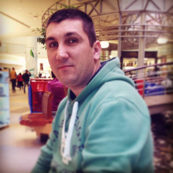

Bine ați acostat pe situl meu
Câte ceva despre mine
 Mă numesc Alexe Cristian Moldovan. De profesie sunt militar și în timpul liber mă ocup de depanarea sistemelor Linux, administrarea siturilor construit pe platforma WordPress și mai rar mă ocup de programarea web în HTML.
Proiectele de care mă ocup în prezent le puteți vedea la pagina „Proiecte”. Pe lângă toate acestea am fost membru voluntar al Fundației Ceata, unde am avut funcția de coordonator local pentru județul Cluj din 18 septembrie 2012 până în data de 31 Decembrie 2014 și m-am retras din fundația în data de 14.08.2015. Am făcut parte din echipa Rogentos Linux Group ca examinator principal și dezvoltator ocazional din Septembrie 2012 până în data de 14 August 2015.
De-a lungul timpului am avut câteva jurnale generaliste, am fost co-fondator la un proiect despre Gentoo. Am mai contribuit la dezvoltarea distribuției Kogaion la primele versiuni al acestuia. Am vrut să mă alătur echipei Mozilla România, unde am participat la prima întâlnire pe țară care a avut loc la Cluj Napoca, din pacate am renunțat la această echipă pentru că nu am contribuit cu nimic. În cadrul Fundației Ceata m-am ocupat de coordonarea câtorva evenimente care sau desfășurat în Cluj Napoca și Turda.
Recomandare
Am lucrat îndeaproape timp de patru ani cu Cristi, care a îndeplinit pe rând rolurile de voluntar al Fundației Ceata, coordonator de echipă locală nouă și colaborator. Apreciez la el curiozitatea, perseverența și seriozitatea. Acum este întreprinzător în domeniul programelor libere și îi recomand cu căldură serviciile, pentru că clienții pe care i i-am trimis au fost toți mulțumiți de rezultate.
23.04.2016 - Tiberiu-Cezar Tehnoetic, Președinte Fundația Ceata
Cristian bought 2 second hand laptops for my sister and mother in law, installed Debian with the default applications and delivered them fast and reliable. I am looking forward to have Cristian equip the rest of my family with Linux computers. Thank you!
14.06.2016 - Thomas Koch (Debian Maintainer, Google Engineer)